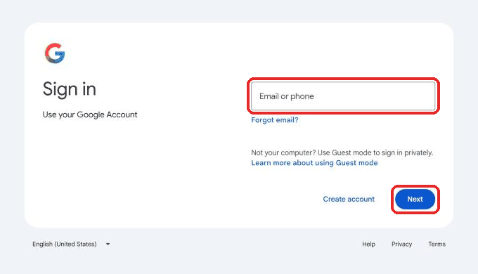
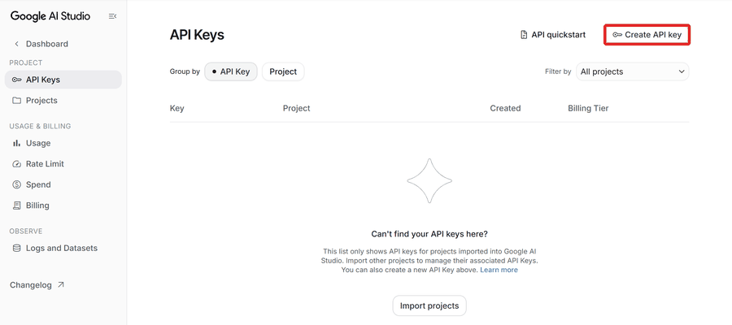
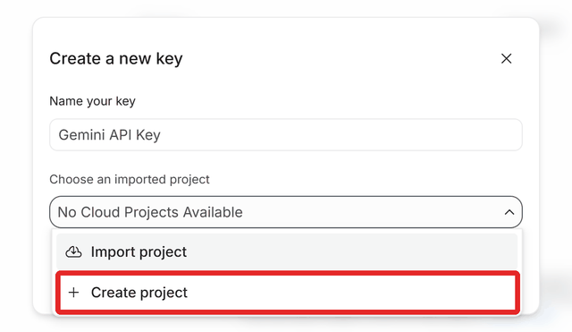
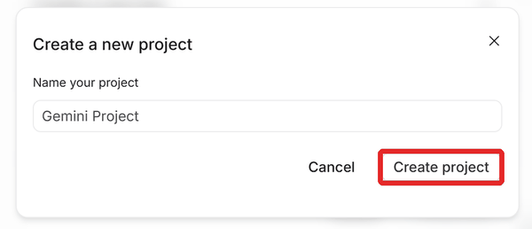
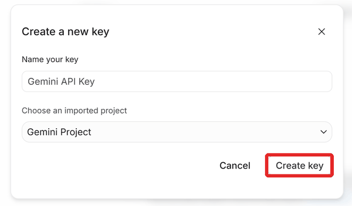
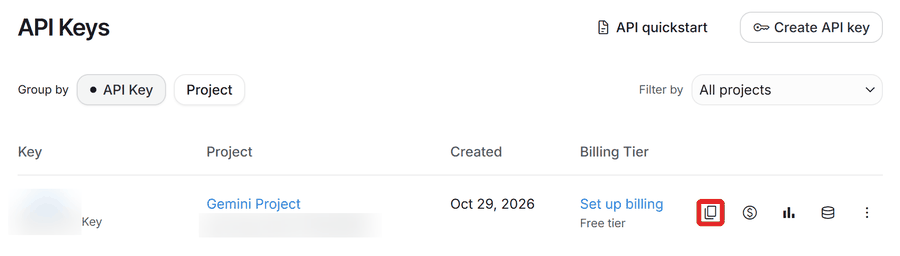

Help
Short answers. Click a question to open it.
What are the two limits?
Anthropic gives each account two limits. The 5-hour limit starts with your first message and resets 5 hours later. The Weekly limit covers the whole week and resets once a week.
The figures are Anthropic's official ones.
How do I read the bars?
Each bar is the share of a limit used; the text under it says how much is left and when it resets. Green is fine, amber is getting close, red is nearly or fully used.
On the widget's bars a light tick shows how much of the 5-hour (or weekly) period has passed. A bar past its tick means you are using it faster than that: at this pace it runs out before it resets.
No use yet means that limit has not been used yet, so there is no reset time.
What is "Fable 0%" under the bars?
Some models have their own weekly limit on top of the two above. Each one shows as a small chip with the model's name, for example Fable 12%; its reset time is in the tooltip.
Claude Code and Claude Desktop: what's the difference?
Claude Code is the Claude app in a terminal and in VS Code; they share one sign-in. Claude Desktop is the desktop app and keeps its own sign-in.
The two are separate: switching one never changes the other.
How do I switch accounts? What is auto-switch?
Click Use here on an account. Claude Code switches at once. Claude Desktop closes and opens again on that account, so tasks running in it stop.
Auto-switch moves to another account when the one in use is nearly used up (set in Settings):
- Claude Code: switches at 95% (5-hour) or 99% (weekly).
- Claude Desktop: switches at 98%, only to accounts with "allow auto-switch" on, at most every 10 min; it restarts.
- Accounts with "allow auto-switch" off are skipped.
The weekly limit is much larger, so 1% of it is more use than 1% of the 5-hour limit.
Weekly use you don't spend before the reset is lost, so the app uses first the account that resets soonest. It may switch before a limit. The accounts are listed in that order, top to bottom: the next one auto-switch would use comes first. Turn it off in Settings to always use the account with the most left.
Why do I see the same Code sessions on every Claude Desktop account?
Switching Claude Desktop copies its list of Code sessions, so every account shows the same sessions (turn it off in Settings). The conversations were never lost: they are on this computer.
The first message after a switch uses a little more of the limit than usual. Do not switch while a reply is running.
How do I add an account?
Claude Code: click + Add account and sign in on the page that opens in your browser. The account shows up here by itself within about 10 s.
Claude Desktop: click its + Add account. Claude Desktop opens again signed out; whichever account you sign in with is saved, and later switches need no sign-in.
How often is usage checked? What does "Paused for a while" mean?
Usage is checked every 10 minutes; an account in use is checked more often as it nears a limit, every minute from 90% of its 5-hour limit (or near its weekly limit). A used-up account is checked again after it resets. Switching to an account checks it at once; Check all now (Settings → Advanced) checks them all.
Paused for a while: Anthropic asked the app to check less often. It waits 5 minutes, then longer each time (up to 1 hour). The figures shown stay as they were.
How do I use the widget?
Hover the tray icon to see the widget. To keep it on screen, right-click the icon and choose Keep widget on screen; drag it anywhere.
The Code and Desktop buttons next to an account switch Claude Code (or Claude Desktop) to that account. A click elsewhere on an account opens its 5-hour and weekly chart; a second click closes it.
How do updates work?
The app checks for a new version every 3 days by itself, or when you click Check for updates in Settings or the tray menu.
If Install updates automatically is ticked, a new version is installed by itself; otherwise click Update to … at the top. The app closes and starts again on the new version.
Claude Code on Gemini (cgemini)
The cgemini command runs Claude Code as usual, but its answers come from Google's Gemini models, paid for by a free Google AI Studio key. Your claude command and Claude sign-ins stay as they are.
To set it up: click + Add Gemini account (free). Google AI Studio opens in your browser and the dashboard shows the same steps, with pictures (below):
- Sign in with your Google account there (and accept Google's terms if asked).
- The first time, there is no code yet: press Create API key. If it says "No Cloud Projects Available", choose Create project, press Create project again (keep the name), then Create key.
- Next to your access code (Google calls it an "API key"), press the Copy button, two small squares.
- That's it: the dashboard picks it up by itself, checks it with Google and saves it.
Then press Use this on the card: a window opens with Claude Code, and Gemini answers instead of Claude. (Or type cgemini in a new terminal: one opened before you added the key does not know it yet.) The dashboard must be running while you use it. Free has a daily limit (try again the next day) and can be slower than Claude.
Privacy: With a free key, Google may read what you send through cgemini, your code too, and use it to improve its models. Do not use it for code that must stay private.






The app reads the clipboard only while that window is open (10 minutes at most), and only keeps text that looks exactly like a Google key; anything else you copy is ignored, never saved or sent. If it does not pick it up, open Or paste it here in the window, paste the code and click Done.
Google sets the free tier's limits (requests per minute and per day) and can change them; AI Studio shows yours. When one is reached, Claude Code says it hit a limit: wait and try again. The card lets you pick another Gemini model (under Advanced). Only models with "Flash" in the name are free; the others say "may cost money".
The key stays on this computer, in the app's state file (%USERPROFILE%\.claude-usage-dashboard\state.json), and is only ever sent to Google. The dashboard shows only its last 4 characters.
To remove it: click Remove on the card. The key is deleted from this computer and cgemini stops working. To revoke the key itself, delete it in Google AI Studio.
What is the usage log?
Every few minutes the app writes down, for every account, the 5-hour and weekly % used and when each one resets. Nothing else: no conversation, no email. It keeps 60 days, in %USERPROFILE%\.claude-usage-dashboard\usage-log.jsonl.
Export in Settings downloads a copy you can share: the accounts are named acc1, acc2… and emails are left out.
Where is my data kept?
Everything stays on this computer, in %USERPROFILE%\.claude-usage-dashboard. Your sign-ins are only ever sent to Anthropic.
Does it run on a Mac?
Yes, for Claude Code (terminal and VS Code): figures, adding accounts, switching and auto-switch; its sign-in is kept in the macOS Keychain. Start scas from Terminal and keep that window open; the dashboard is at http://127.0.0.1:4777. On a Mac there is no tray icon, Claude Desktop is not switched, and updates are downloaded by hand from the release page. Data is in ~/.claude-usage-dashboard.
How do I uninstall it?
Windows Settings → Apps, find Smartlog Claude Auto Switch, click Uninstall. Your saved accounts are kept.